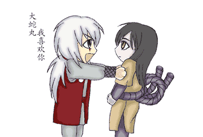

|
对于结局我就笑笑不说话 都想给岸本寄杀猪刀了，前面拖剧情……然后烂尾，我会告诉你我就是想看看蛇叔的结局吗，结果你给我搞这玩意。告诉我蛇叔去哪里了!!岸本真是……好歹交代一下蛇叔的结局，结果不声不响就消失了……别以为我不知道你家~~~ 为了让自己晚上能睡好觉，我研究啊研究啊终于让我发现了2个可能，第一，我感觉结尾说蛇叔了，佐助感觉有人看着他，很可能是蛇叔。第二，肯定是找兜去了。好吧，就酱紫…… 下面我就去偷窥一下蛇叔的幸福生活，哇哈哈,这么激动真的好吗!!!! 蛇叔终于在最后发现还是兜是最重要，但是这么急冲冲的跑去，真的好吗，难道不矜持一下：  大蛇丸：(⊙o⊙)… 兜：(其实我找就想这么做了) 大蛇丸：你还准备看直播吗(瞪眼) 我：(两眼直发光)咔……咔……(照片保存)为了小命还是先跑路 …………………………6个小时后…………………… 我已经在到处找纸巾檫鼻血……，这尤抱琵琶半遮面大概就是这种效果 大蛇丸：火影都完结了，我们是不是也去放松放松啊 兜：那去哪里呢 大蛇丸：去夏威夷不 兜：……(两只小手委屈的扒拉下钱包看了看……钱好像不够) 最后…… 兜弄了一块画布模拟夏威夷的场景……大蛇丸大人生气了，即使生气都这么美，你这么美，让我这妹子怎么活，来根辣条压压惊！ 蛇叔，你这是傲娇呢，还是傲娇呢!你这么搞，你家兜可造啊，不要口是心非哦，你不要兜我要，你妈我还单身呢，淡淡的忧伤 话说你小的时候不是看过兜吗，(⊙v⊙)嗯！ 大蛇丸第一次见到兜，这表情赤裸裸的一见钟情…… 兜：我怎么不知道我小的时候和大蛇丸大人见过……(疑惑) 大蛇丸：…… 蛇叔，我错了，我不该这么对你，别用这么迷人的眼神看偶，人家的小心肝受不了了~~~~ |